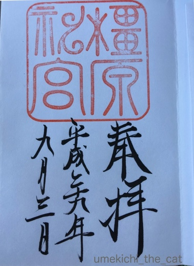
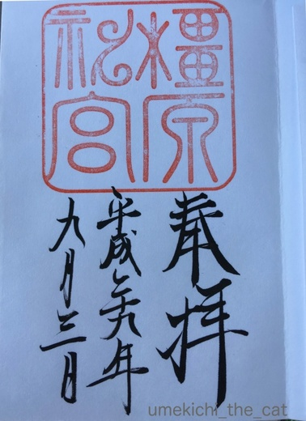

自宅警備＆セルフ広報活動 [梅吉]
警備中に失礼します。
梅吉さんの熱心なお仕事の様子を取材してもいいですか？
![[猫]](https://blog.ss-blog.jp/_images_e/101.gif) とりこみちゅうやけどな かまへんで
とりこみちゅうやけどな かまへんで

仕事中の凛々しい後ろ姿(*>艸<)
ほぼ毎朝寝室の窓から我が家の外回りをチェックする梅吉。
小学生の登校時間に当たることも多く時々「ねこ〜〜〜！」と呼ぶ声が聞こえて来たりします。
梅吉は知らない人でも逃げたりしないので

こんな風にアピールしているのかもしれません。
そんな梅吉の日々の活動の成果か以前玄関前に脱走してしまった時に
マンションの同じフロアーの方が「お宅の猫、外に出てますよ」と教えてくれたことがありました(^▽^;)
窓の外から「梅ー！！」と呼びかける声が聞こえて来たこともあって「梅吉！？」と思い
レースのカーテン越しにのぞいて見たらオフリードの室内犬を追いかけてくる女性の姿・・・・・
わんちゃんのお名前だったみたい。。。
私が梅吉を呼ぶ声が大きくて名前が知れ渡っているのかとびっくりしましたよ〜。
まだお名前までは浸透していない様ですね。
今度大きな名札でも作りましょうか？
ところで我が家周りに異常はありませんでしたか？
わしがおるからな だいじょうぶや。
お仕事と梅吉広報活動おつかれさまでした。
週末あちこち出歩いていたのでブログのお返事＆みなさまへのご訪問が遅れております。
これから遊びにお伺いしますね＾＾
 ↑ガブッと一押し↑
↑ガブッと一押し↑
奈良橿原市の本薬師寺跡にホテイアオイを見に行って来ました。
田んぼの一角に広がる満開のホテイアオイ。
午後に到着したのでお花は閉じていましたがハスの花とのコラボ。
正直小さいため池に咲いているのだろうと思っていたのですが
田んぼ５〜６面にびっしりと花が咲き乱れていました。青空にも良く映えてとってもキレイでした！
橿原にいったら当然橿原神宮参拝。
神々しい空間でした。

こ朱印もいただいて来ました。
梅吉さんの熱心なお仕事の様子を取材してもいいですか？

仕事中の凛々しい後ろ姿(*>艸<)
ほぼ毎朝寝室の窓から我が家の外回りをチェックする梅吉。
小学生の登校時間に当たることも多く時々「ねこ〜〜〜！」と呼ぶ声が聞こえて来たりします。
梅吉は知らない人でも逃げたりしないので

こんな風にアピールしているのかもしれません。
そんな梅吉の日々の活動の成果か以前玄関前に脱走してしまった時に
マンションの同じフロアーの方が「お宅の猫、外に出てますよ」と教えてくれたことがありました(^▽^;)
窓の外から「梅ー！！」と呼びかける声が聞こえて来たこともあって「梅吉！？」と思い
レースのカーテン越しにのぞいて見たらオフリードの室内犬を追いかけてくる女性の姿・・・・・
わんちゃんのお名前だったみたい。。。
私が梅吉を呼ぶ声が大きくて名前が知れ渡っているのかとびっくりしましたよ〜。
まだお名前までは浸透していない様ですね。
今度大きな名札でも作りましょうか？
ところで我が家周りに異常はありませんでしたか？
お仕事と梅吉広報活動おつかれさまでした。
週末あちこち出歩いていたのでブログのお返事＆みなさまへのご訪問が遅れております。
これから遊びにお伺いしますね＾＾
奈良橿原市の本薬師寺跡にホテイアオイを見に行って来ました。
田んぼの一角に広がる満開のホテイアオイ。
午後に到着したのでお花は閉じていましたがハスの花とのコラボ。
正直小さいため池に咲いているのだろうと思っていたのですが
田んぼ５〜６面にびっしりと花が咲き乱れていました。青空にも良く映えてとってもキレイでした！
橿原にいったら当然橿原神宮参拝。
神々しい空間でした。

こ朱印もいただいて来ました。

カフェオレ色の梅吉

梅吉 2023年8月10日 永眠


梅吉と出会った譲渡会

犬猫の理由なき殺処分ゼロ
妄想広告
UMEKICHI 光

爆発的に早い！
時々攻撃的！
Thanks to Mr.Boss365
爆発的に早い！
時々攻撃的！
Thanks to Mr.Boss365

梅吉さん、毎日の見回りご苦労様です＾＾
ちゃんと仕事してるんですよね～。
見つけて嬉しい子もいることでしょう＾＾
梅は今、人気の名前？
昔よその猫が遊びに来た時、そのお宅で呼んでいる声が聞こえた名前でわが家でも呼んでいたら、そこの坊っちゃんの愛称だと後にわかったことが‥
ホテイアオイ、こんなに綺麗なんですか～！
昔うちにあったのはここまで綺麗じゃなかった＾＾；
by sana (2017-09-04 15:09)
梅吉さんの警備姿、頼もしくて可愛いです。
ホテイアオイ咲いてるんですね。圧巻です。
写真の腕も、大先輩みたいな気がします。
今度、近くのホテイアオイのある場所に出かけてみます(^^♪
by riverwalk (2017-09-04 15:44)
自宅警備！毎日お疲れ様です♪
お仕事している凛々しい後ろ姿が
また素敵ですね(*^_^*)
by きぃ (2017-09-04 16:20)
梅吉さん、自宅警備お疲れ様です(^O^)
梅吉さんのおかげでちぃさん家の安全は完璧ですね(^-^)
「ねこ～」と呼んでもらえる梅吉さん、とても羨ましいです＾＾
うちの大御所は出窓で下を見ていたときに「アレって猫・・・だよね？」と
言われてましたｗ
by ニッキー (2017-09-04 16:27)
梅吉君毎日の自宅警備ご苦労様です。広報活動も兼務してるとは恐れ入りました(^^)
by palpal (2017-09-04 17:25)
自宅の警備だけなく登校する子供たちの見守りまで！ 梅吉さんエライ(*^▽^*)
廊下をだれか通ったらビビって逃げてくるウチのビビリ猫とは大違いです^^;
ホテイアオイって池にびっしりの葉っぱのイメージしかないのですが、こんなにきれいな花が咲くんですね！
by ゆきち (2017-09-04 17:47)
梅吉さん後ろ姿の肩の筋肉の盛り上がりがすごいです。鍛えてますね~。
昔うちにもあったはずなのにホテイアオイの花を見た記憶がありません。
by zombiekong (2017-09-04 18:54)
窓に梅吉ちゃんと貼っておいたらどうでしょうか？呼ばれるかも？
by みぃにゃん (2017-09-04 18:59)
梅吉さん、窓で思い切り伸びてますね(^^)
by ma2ma2 (2017-09-04 20:33)
梅吉警備員さん、お勤めご苦労様です～。
後ろ姿が頼もしいです。^^)
しかも、広報部員兼務とは御見逸れしました。
ホテイアオイの花、初めて見ました。圧巻ですね！
by yes_hama (2017-09-04 21:59)
本日は、満開のホテアオイの花に感動であります。
こんなにも美しい花を咲かすのですね！！
by うめむす (2017-09-05 00:24)
玄関前脱走、ビックリでしたね。
無事でよかったです＾＾
梅吉さん、サービス精神旺盛だし、
関西弁がまた、いい味出してますね～♪＾＾
by マーヤ (2017-09-05 00:50)
実は最近、我が家でも玄関前脱走がありまして。
直ぐに戻って来てくれて事無きを得ましたが
子猫さんとみゅうくんが行方不明になるところでした＾＾；
by ぽちの輔 (2017-09-05 07:02)
梅吉さん。日々の見回り、ご苦労様です！（敬礼）
梅吉さんの警備なら、安全＆安心！！
怪しいのがこようと、虫さんがこようと（←これが一番怖い…）、
梅吉さんパンチでイチコロですね！
いち、にっ、さん、しー、ニャルソック～♪
日ごろの広報活動の効果で、取材が増えるかもですね(^^♪
by morichan (2017-09-05 12:06)
梅吉さん、警備＆取材！お疲れさまです。
通学の見守りまでして、小学生にも人気猫ちゃんだったりして～(^-^)
家もタンゴとポロンが脱走してしまったことが・・・( ；∀；)
梅吉くんも警備はお家の中からだけにしてくださいね。
お願いにゃ。
by emi (2017-09-05 14:49)
sanaさん＞「こうみえて わし いそがしいねん」と梅吉が申しております＾＾
最近あそこの家（sanaさん家）の人、僕の名前を呼んでるんだよね・・・・
という戸惑いの会話があったかもしれませんね〜 (^▽^;)
知らずに呼び続けなくてよかったという事で(^_－)☆
riverwalkさん＞ベランダに撒く雀ご飯に便乗しようとやってくる
鳩を追い払ってくれることもあるんですよ。
（気が向いた時だけ・・・・・(⌒_⌒; ）
行動圏内のホテイアオイ、咲いていると良いですね＾＾
きぃさん＞首回りのもりもりっ！がなかなか頼もしい感じでしょう〜(≧▽≦)
最近カシャぶんで鍛えていますから(｀_´)ゞ
ニッキーさん＞大御所様はその頼もしいお身体ともふもふ具合が
ぬぐるみに見えたのかもしれませんね！！
「ねえ・・あれって生きている猫？」が発言の真意と思われますよ〜(๑˃̵ᴗ˂̵)و
palpalさん＞なかなかマルチな活躍でしょ(*>艸<)
がぶがぶ猫なのは伏せているようですが・・・・
ゆきちさん＞知らない人にもスリスリしようとする梅吉なので
自宅周りは「見る」だけで「守る」ことはしてくれないかもしれません(^▽^;)
カリカリにもすぐ釣られちゃいそうだし・・・・・
私もホテイアオイに花が咲くなんて最近まで知りませんでした。
金魚の水槽に入っているヤツには花なんて咲いていないし。
田んぼの日当たりの良い株は花付きがよかったので
決め手は日当たりかな、と思いましたよ〜。
zombiekongさん＞ご指摘を受けて私も「ぬぬっ！」と写真を見直しました〜。
最近カシャぶんで鍛えているからでしょうか・・・ムキっとしていますよねＯ(≧▽≦)Ｏ
頭が小さいから余計にムキっが際立つ様でもあります(*>艸<)
みぃにゃんさん＞あ、それ良いかもしれませんね(*>艸<)
我が家の名字が「梅吉」と思われないようにしなくっちゃ！！
ma2ma2さん＞みょ〜〜んと思い切り伸びていました〜。
これはベランダでバーベキューをしている私たちに
「わしもだして〜！！」とアピールしている所です＾＾
うめむすさん＞水槽にはいっているホテイアオイにお花が咲いているのなんて
見たことないですものね！
私も感動も美しさでした。
日当たりの良い田んぼでさらに花付きが良くなっていたのだと思います。
近所の小学校の生徒が毎年手を入れているようなので
肥料もちゃんともらっていたのかもしれませんね〜＾＾
マーヤさん＞梅吉の脱走は私が窓を閉め忘れる・・・という凡ミスで・・・
本当にびっくりしました(꒦ິ⌑꒦ີ)
梅吉が窓越しにサービス精神を発揮して顔を売ってくれていてよかった〜！
梅吉は我が家で唯一の大阪生まれなんですよ＾＾生粋のなにわっこ。
ぽちの輔さん＞お互いに事無きを得ましたね！！
脱走・・・背筋の冷たくなる言葉です(꒦ິ⌑꒦ີ)
morichanさん＞我が家の警備担当梅吉さんの（遊んで！）梅吉パンチ！
（遊んで！！）梅吉がぶがぶが繰り出されることは確かなんですが
我が家を守ってくれるかは怪しい・・・と言われております(^▽^;)
取材！きっと取材の人にもがぶがぶですよ〜ww
emiさん＞小学生たち、梅吉ががぶがぶ猫なことを知りませんからね！！
この秘密は伏せておいてますますの人気↑を狙いますよ(^_－)☆
脱走、本当に怖いですよね。梅吉の脱走は私の不注意で・・・・・
家はマンションだから階下に降りてしまったらほぼ戻ってこられないと思うの。
後からそのことを考えらた膝ががくがくしましたよ・・・
by ちぃ (2017-09-05 15:48)
頼もしい後ろ姿！
ぜひ、ブラインドとワイングラスを用意して欲しかった（笑）
by じゅらまろ (2017-09-05 16:34)
じゅらまろさん＞ブラインドとグラス・・・
太陽にほえろのボスみたいな！？(*>艸<)
梅吉にもう少し貫禄が欲しいところね〜ww
by ちぃ (2017-09-05 18:05)
知らない人にも平気なのね！梅吉君！！
おばちゃんが遊びに行っても接待してくれるー？(笑)
by リュカ (2017-09-06 13:28)
ちぃさんに甘えんぼするのと遊ぶのが大スキな、まだまだBOYだと思っていたら、横顔、肩、背中に逞しさが漂っている～♪
(*ё_ё*)きゅん・・
by Ginger (2017-09-06 13:57)
リュカさん＞平気ですよー！
きっと足がぶがぶされると思うから我が家に来るときは厚手の靴下で(^_－)☆
私なんかそっちのけでリュカさんの匂い嗅ぎまわるから覚悟してねww
Gingerさん＞働く男の背中・・・ですよねーＯ(≧▽≦)Ｏ
夏が終わって梅吉も大人になったのかしら・・・・
わ〜何があったんだろう！！(*>艸<)
by ちぃ (2017-09-06 14:40)
梅吉さん、お疲れ様です。
田んぼの一角に広がる満開のホテイアオイ、凄いですね〜
綺麗です。
by kiki (2017-09-06 15:26)
kikiさん＞ホテイアオイ圧巻でした。
こんなにたくさん咲いていて、しかも一株毎のお花が大きい！
by ちぃ (2017-09-06 17:30)